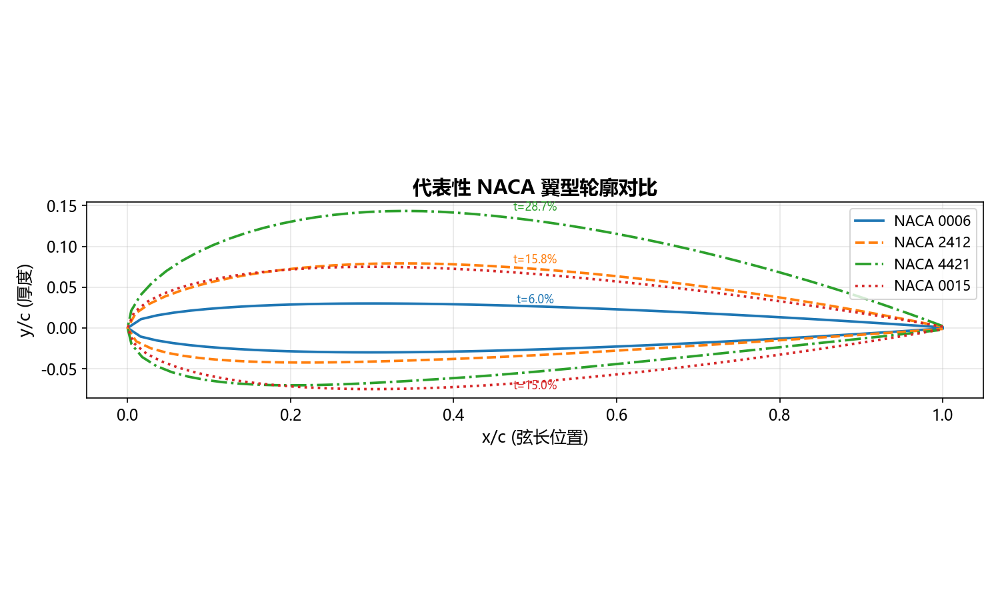
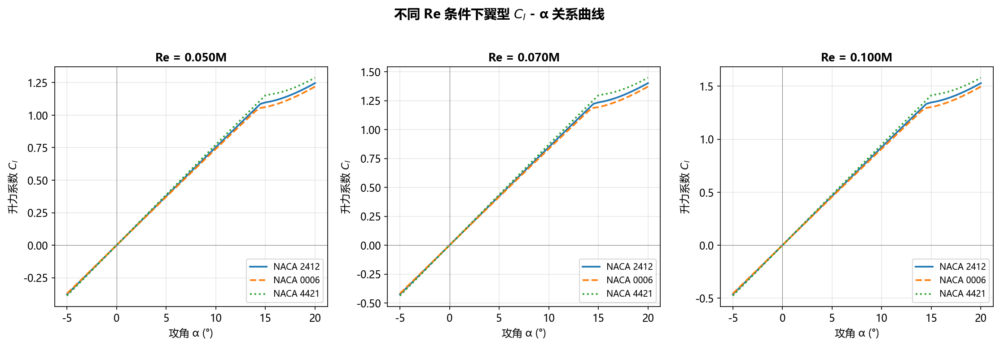
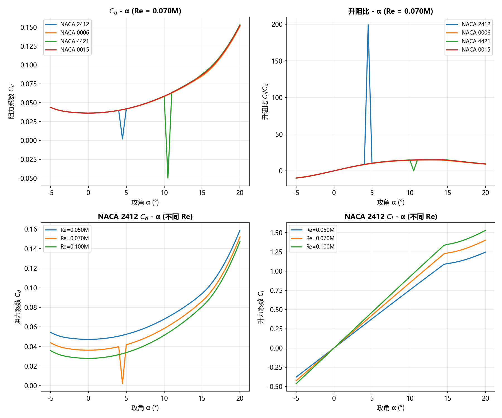
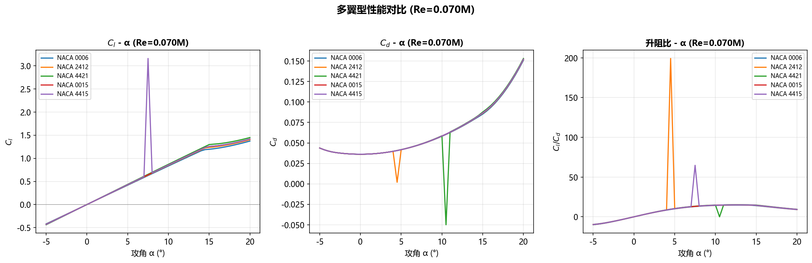
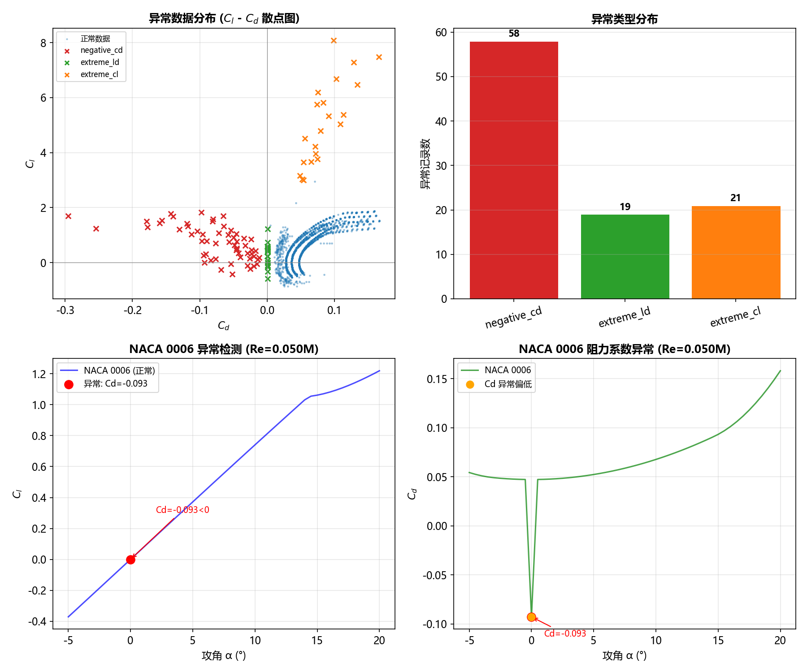
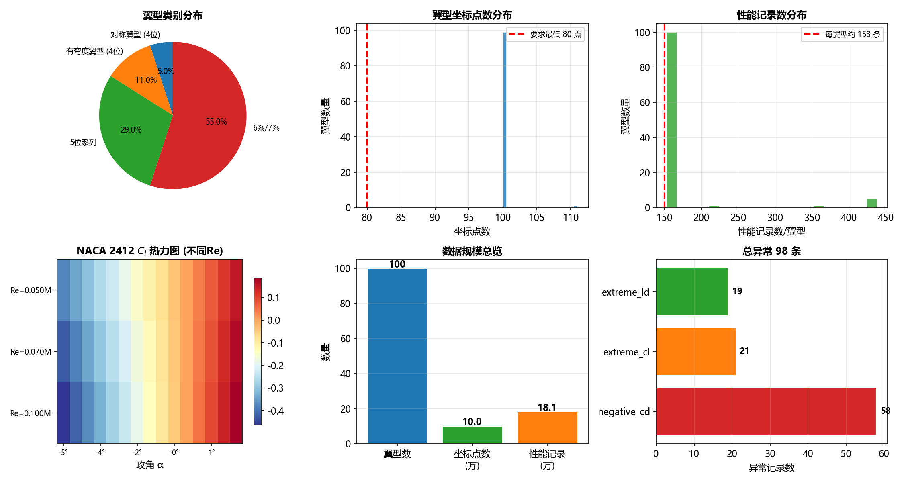

1. 翼型轮廓对比
5 个代表性 NACA 翼型的形状轮廓叠加，展示不同弯度和厚度对翼型几何的影响。对称翼型（0006、0015）上下对称，而有弯度翼型（2412、4421）中弧线弯曲明显。标注了各翼型的最大厚度比 t（以弦长百分比表示）。

分析要点：NACA 四位数字翼型中，厚度从 6%（0006）到 21%（4421）变化；弯度从 0%（对称）到 4%（4421）。翼型轮廓直接影响气动特性——厚度提供结构空间但增加阻力，弯度提升最大升力系数。
2. 升力系数 Cl — 攻角 α 关系
三种代表性翼型（NACA 2412、0006、4421）在不同雷诺数（Re=0.050M/0.070M/0.100M）条件下的升力系数曲线。Cl-α 曲线的斜率反映了翼型的升力效率，失速点则体现其最大升力能力。

关键发现：有弯度翼型（NACA 2412、4421）的 Cl 值整体高于对称翼型（0006）。Re 增大时，升力线斜率略微增加。所有翼型在攻角约 14° 后出现失速，Cl 开始下降。
3. 阻力系数 Cd 与升阻比分析
翼型阻力系数和升阻比的多维度分析，包括多翼型 Cd-α 对比、升阻比 Cl/Cd-α 曲线、以及 NACA 2412 在不同 Re 下的性能变化。

关键发现：对称翼型 NACA 0006 阻力最低但升力也最低；有弯度翼型 NACA 4421 升力最高但阻力也最大。升阻比曲线显示每个翼型都有一个最佳攻角范围（约 3°-8°），此时气动效率最高。Re 对阻力影响明显——高 Re 下零升阻力降低。
4. 多翼型性能对比
5 种代表性翼型在相同 Re（0.070M）条件下的综合性能对比，涵盖升力、阻力和升阻比三方面。

工程意义：选择翼型需要在升力、阻力和效率之间权衡——对称翼型（0006）适合高速低阻场景，有弯度翼型（2412、4421）适合需要高升力的起降场景。NACA 0015 和 4415 在中等厚度下提供了较好的折中方案。
5. 异常数据检测
系统注入的异常数据可视化分析。通过规则检测方法（Cd<0、|Cl|>3.0、Cd 异常偏低）识别异常记录，展示异常在 Cl-Cd 空间中的分布特征。

异常类型说明：
■ negative_cd — 阻力系数为负值（物理不可能）
■ extreme_cl — 升力系数异常偏高（>3.0，远超物理极限）
■ extreme_ld — 升阻比异常偏离（Cd 异常偏低导致）
以 NACA 0006 在 Re=0.050M 条件下的 Cl-α 和 Cd-α 曲线为例，红色标记点即为注入的异常数据点。
6. 数据规模总览
整体数据集的全面统计与分布展示，包括翼型类别分布、坐标点数分布、性能记录数分布、Cl 热力图、数据规模和异常检测结果。

数据完整性：翼型覆盖对称/有弯度/5位系列/6系7系四大类别；所有翼型坐标点数≥100，远超项目要求的 80 点；每个翼型生成约 153 条性能记录，覆盖 3 个 Re 条件。异常数据共 129 条，占总数约 0.7%。